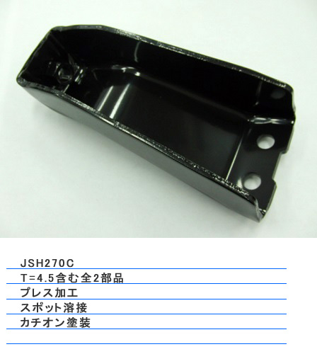
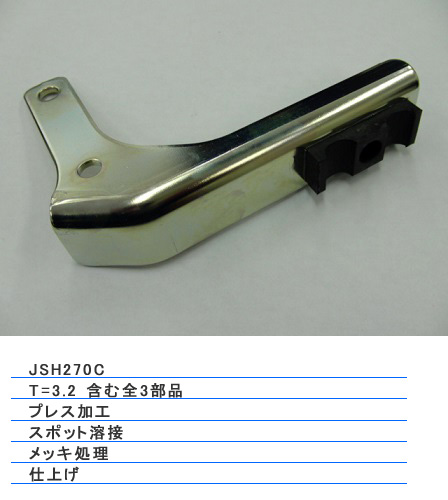
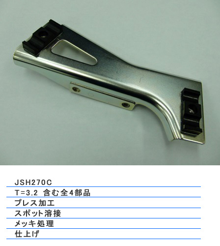
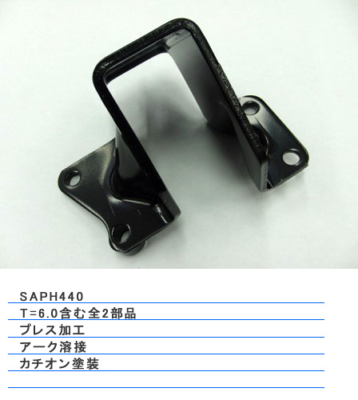
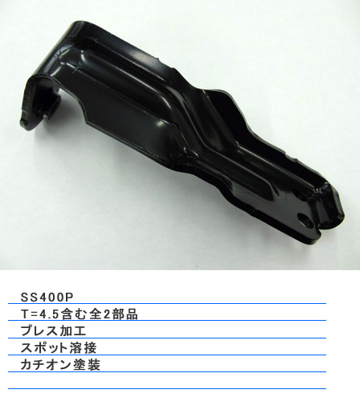
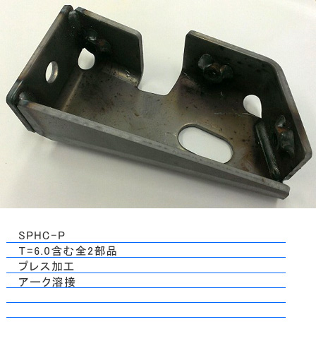

自動車部品プレスメーカー・1941年創業
図面1枚のお預かりから、
製品納入まで。
多田プレス工業は、創業以来プレス加工を事業の中心に据え、自動車部品に特化してきた会社です。板厚0.6mmから12mmまで。特に厚物プレスには定評があります。
工程設定、金型製作、プレス、溶接、カチオン電着塗装、納入。神奈川・秦野の本社工場群、栃木・鹿沼の栃木工場、タイ・ラヨーンの海外工場が、一貫した生産体制で応えます。

- 0.6〜12mm対応板厚
- 1941創業（昭和16年）
- 3拠点秦野・鹿沼・タイ
- 379名グループ従業員
厚物プレス
12ミリの鉄板を、
プレスで抜く。
薄板のプレス屋は多くても、板厚12mmを抜ける工場は限られます。トラックの足回りを支えるブラケットやステーは、この厚物プレスの領域です。当社は1951年からいすゞ自動車の協力工場として、この分野で技術を蓄えてきました。1981年には直納指定認定工場になっています。
- いすゞ自動車直納指定認定工場（1981年〜）
- ISO 9001本社 2003年／栃木工場 2009年
- エコアクション212012年 認定
- 栃木県フロンティア企業2021年 知事認証
製品案内
材質と板厚まで、
書いておきます。
主にトラック・自動車のブラケット、ステー、クランプ、パネル類です。写真の下に材質・板厚・工程を添えています。
-

- 材質
- JSH270C
- 板厚
- 3.2mm（全3部品）
- 工程
- プレス・スポット溶接・メッキ処理・仕上げ
-

- 材質
- JSH270C
- 板厚
- 3.2mm（全4部品）
- 工程
- プレス・スポット溶接・メッキ処理・仕上げ
-

- 材質
- SAPH440
- 板厚
- 6.0mm（全2部品）
- 工程
- プレス・アーク溶接・カチオン塗装
-
- 材質
- JSH270C
- 板厚
- 4.5mm（全2部品）
- 工程
- プレス・スポット溶接・カチオン塗装
-

- 材質
- SS400P
- 板厚
- 4.5mm（全2部品）
- 工程
- プレス・スポット溶接・カチオン塗装
-

- 材質
- SPHC-P
- 板厚
- 6.0mm（全2部品）
- 工程
- プレス・アーク溶接
製品例：BRKT;PIPE,ATF／FOOT;ENGINE／STAY;FAN GUIDE／BRKT;BELL MOUTH／BRKT ASM;EXH PIPE／BRKT;OIL TANK,P/S／LEVER ASM／DEFLECTOR,DUST／BRKT;RESERVE TANK／BRKT;ASSY STABI ほか
一貫生産
四つの工程を、
社内でつなぐ。
-
01
プレス加工
単発プレス機・自動プレス機・RYロボットシステムの使い分けで、毎月少量から毎月数万個まで柔軟に対応。大量生産品はPRG型による自動化で、精度・安全性・コストを同時に改善します。
-
02
アーク溶接・スポット溶接
アーク溶接は1ロボット2テーブル化。片側で溶接している間にもう片側で脱着・準備を行い、待ち時間を削ります。スポット溶接も専用治具を積極的に整備しています。
-
03
金型製作
部品ごとに工程と費用を検討し、安全で質の高い金型を製作。一部を栃木工場成型課で内製し、金型費のコスト削減を図っています。
-
04
カチオン電着塗装・メッキ塗装
部品ごとに設定された表面処理を、徹底した品質管理のもとで実施。カチオン電着塗装は本社工場のラインで内製し、スピーディーに対応します。
3つの拠点
秦野、鹿沼、ラヨーン。
本社・秦野工場群神奈川県秦野市
- 設立
- 1941年10月（本社）
- 従業員
- 159名（うち派遣39名）
- 主要設備
- 単発プレス 24台（35〜500t）／自動プレス 4台／溶接ロボット 10台／スポット溶接機 15台／カチオン電着塗装 1ライン
- 所在地
- 本社 曽屋78-1 Tel. 0463-81-1456
塗装出荷工場 曽屋997／曽屋工場 曽屋63-1
栃木工場栃木県鹿沼市
- 設立
- 1976年1月
- 従業員
- 90名（うち派遣16名）
- 主要設備
- 単発プレス 16台（60〜500t）／自動プレス 7台（RYロボットシステム3台含む）／溶接ロボット 9台／スポット溶接機 8台／金型製造設備 一式
- 所在地
- 〒322-0026 鹿沼市茂呂812-1
Tel. 0289-76-3444 Fax. 0289-76-3415
タイ工場TADA PRESS (THAILAND) CO., LTD.
- 設立
- 2011年7月
- 従業員
- 130名（うち日本人出向2名）
- 資本金
- 136,000,000 バーツ
- 主要設備
- 自動プレス 10台（80〜300t）／単発プレス 8台／溶接ロボット 5台／スポット溶接機 9台
- 所在地
- タイ国ラヨーン県 アマタシティ・ラヨン工業団地内
沿革
目黒の町工場から、
タイの工業団地へ。
- 1941年昭和16
東京都目黒区に多田プレス工業株式会社を設立。
- 1951年昭和26
いすゞ自動車株式会社の協力工場となる。
- 1961年昭和36
神奈川県秦野市に秦野工場を新設し、本社を移転。
- 1969年昭和44
京浜精密工業株式会社と業務提携。
- 1976年昭和51
栃木県鹿沼市に栃木工場を新設。
- 1981年昭和56
いすゞ自動車株式会社の「直納指定認定工場」となる。
- 1996年平成8
栃木工場内に金型専用工場を新設。
- 2000年平成12
本社工場に塗装ラインを新設。2005年にはカチオン電着塗装ラインを新設。
- 2003年平成15
本社工場にて ISO9001:2000 認定取得（栃木工場は2009年）。
- 2008年平成20
神奈川県秦野市曽屋に新プレス工場を新設。
- 2011年平成23
TADA PRESS (THAILAND) CO., LTD. を設立。翌年 BOI 承認取得。
- 2012年平成24
本社工場・曽屋工場にてエコアクション認定取得。
- 2021年令和3
栃木県フロンティア企業 認証授与。
- 2023年令和5
神奈川県秦野市曽屋に新本社工場を新設（8.4億円を投資、溶接能力3割増 — 日刊工業新聞 2023年9月4日付）。
よくあるご質問
はじめての方へ
どのくらいの板厚まで加工できますか。
板厚0.6mmの薄い部品から12mmの厚い部品まで対応します。特に厚物プレスには定評があります。500t単発プレスや300t自動プレスを備えています。
どこまで一貫して頼めますか。
「図面1枚のお預かりから製品納入まで」を掲げています。工程設定、金型製作、プレス、溶接加工、表面処理（カチオン電着塗装・メッキ塗装）、納入まで一貫した生産体制です。
少量でも大量でも対応できますか。
単発プレス機、自動プレス機、RYロボットシステムの使い分けで、毎月少量生産の製品から毎月数万個の大量生産まで効率的に対応します。
品質・環境の認証は。
ISO9001（本社2003年・栃木工場2009年）、エコアクション21（2012年）を取得しています。1981年からいすゞ自動車の直納指定認定工場であり、2021年には栃木県フロンティア企業に認証されました。
海外生産はできますか。
2011年設立のタイ工場（アマタシティ・ラヨン工業団地内）で生産できます。自動プレス・単発プレス・溶接ロボットを備え、現地の完成車・部品メーカーに納入しています。
会社概要
多田プレス工業株式会社
- 会社名
- 多田プレス工業株式会社（TADA PRESS）
- 設立
- 昭和16年（1941年）10月
- 資本金
- 5,000万円（タイ工場 136,000,000バーツ）
- 事業内容
- 自動車部品の製造（BRACKET、CLAMP、STAY、PANEL等）
プレス加工、溶接、塗装、組立、および金型製作 - 従業員
- 本社 159名／栃木工場 90名／タイ工場 130名（2023年9月現在）
- 主要顧客
- いすゞ自動車様、プレス工業様、浅川製作所様、IJTT様、京浜精密工業様、京浜興産様、豊盛工業様、小松電業所様、ニットーボー様、THAI SUMMIT PKK GROUP様、ISUZU MOTORS (THAILAND)様 ほか
- 取引銀行
- 三井住友銀行 平塚支店／横浜銀行 秦野支店／商工組合中央金庫／日本政策金融公庫／中栄信用金庫／鹿沼相互信用金庫
図面を、お預かりします。
材質・板厚・数量・ご希望の表面処理をお知らせください。工程と概算をご提案します。